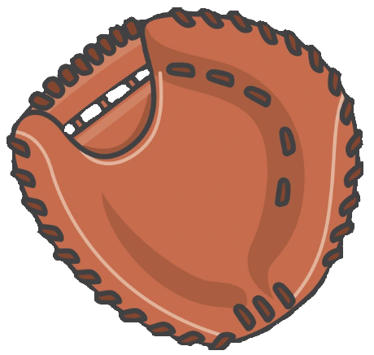
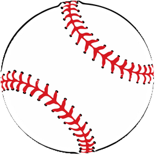

∑ Average target vs location
Mitt = average target · Ball = average plate location (real means). Avg |d| is mean absolute miss; net vector can cancel — filter key outcomes to see directional miss. Click a marker for details.


Your left · RHB
Your right · LHB
Avg miss: —
Pitch key · click to filter
X · Swing
Dot · Take
Averages
Mitt · avg target
Ball · avg location